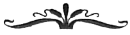

Ölüm bir dost olabilir, ama yalnızca doğru zamanda uğrarsa.
— Navahıristiyan metni (tartışmalı çeviri)
Ateşler içinde yanan Raquella, rüyasında atalarının hayallerini, görüntülerini ve umutlarını görüyordu. Gizemli büyükbabası Vorian Atreides ve Vorian'ı seven kadın olan büyükannesi Karida Julan da oradaydı... sayısız kadın, adam, kahraman, korkak, lider ve takipçi de öyle. Ve Mohandas Suk.
Bir yerlerde su damlayışı duyuyordu ... veya başka bir sıvı damlıyor ... zamanın geçişi gibi tıklıyordu. Fiziksel bedeninin eriyip gittiğini, gezegenin çağlar ötesine uzanan ekosistemine yeniden katıldığını hissediyordu.
Rossak.
Böyle garip bir dünyada ölmeyi hiç beklemezdi. Raquella burada doğmamıştı, Rossak'la bir bağlantısı yoktu, Musibet yeniden ortaya çıkmasa ve yardım etme ihtiyacı duymasa oraya asla gelmezdi.
Hissiz ve akıntıya kapılmış gibiydi, derisinde hiçbir dokunsal duyu, hiçbir hareket etme becerisi yoktu. Sanki kalın ve ağır bir şey bedenini kaplamış ve içindeki canı çıkarmaya çalışıyordu. Retrovirüs müydü bu? Yoksa olanaksız sorumlulukları mı? Çok zorlanarak da olsa derin ve doyurucu bir soluk almayı başardı.
Jimmak Tero onu bir yere götürmüştü, gümüşi mor renkli ormanın derinliklerindeki gizli bir yerdi burası. Raquella o sırada yarı bilinçliydi ve yalnızca sesleri, nemi, şaşırtıcı kokuları hatırlıyordu. Şimdiyse nerede olduğu konusunda hiçbir fikri yoktu.
Zihnindeki ve bedenindeki kesintisiz uğultuya rağmen Raquella kendini sakinleştirmeye çalışıyordu. Her şey yolunda. Büyük iyilikler yaptım. Mohandas ve ben salgın kurbanlarına yardım ettik. Onların iyiliği için hayatımı feda etmeye değerdi.
Uzun zaman önce Parmentier'de Vorian Atreides onunla gurur duyduğunu söylemişti ve o zamandan beri de bu nazik söz aklından çıkmıyor, bu yabancının, büyükbabasının kendisi için hissettiği duygunun tadını çıkarıyordu. Vor aradaki yıllarda onu pek çok kez ziyaret etmiş, ona sevgisini ve sarsılmaz desteğini vermişti. Raquella artık onu tanıdığı ve sevdiği için kahraman büyükbabasının saygısı ve gururu her zamankinden daha fazla anlam taşıyordu. İnsanlık Ordusunun Yüce Başarı önemli ve ünlü bir adamdı. Onu bulmak için büyük zahmete girmişti ve sonunda bulmuştu, ama tam salgın zamanında.
Bedeninde dolaşan ağrının şok dalgalarını durdurmak için çabalarken, nefes alabilmek için bütün enerjisini kullanması gerekiyordu. Damlama sesine odaklanıp ritmik sese tutundu, bilinçsizlik ve hayatın bıçak sırtında dengede durmaya çalıştı. Tıp. Nefes al. Tıp. Nefes al.
Raquella geçmişi düşünüp, kargaşa çölündeki mutluluk vahasını hatırladı. Hayatının büyük bölümü çalışarak, arayarak, başararak ve çok azı Tanrının etrafa serpiştirdiği sevinçli sürprizlerin verdiği keyifle geçmişti. Ama Raquella bir fark yaratmıştı ve bu bir kişi için yeterli olmalıydı. Kendini yorgun hissediyordu, hayata bağlanan ince bağlarını bırakmaya neredeyse hazırdı.
Damlama sesi biraz daha arttı. Yüzünde bir şey hissetti, serin bir ıslaklık ve isteksizce bir ağız dolusu yutkunmak. Bunun ilk yudum olmadığını fark etti. Ne kadar zamandır oradaydı? Ve neredeydi? Su, ona bir şey yapmıştı ... veya o suya bir şey yapmıştı. Garip bir histi bu.
Raquella kıpırdanıp gözlerini açtı, yanına diz çöküp yanaklarına ve alnına su sıçratan Jimmak'ın geniş, masum yüzünü gördü. Raquella'nın uyandığını görünce yüzü dizginsiz bir sevinçle aydınlandı. "Ben Doktor Çocuğum. İyi iş yaptım."
Raquella ayna gibi pürüzsüz bir gölün yanındaki gevşek toprak bir zeminde yattığını gördü. Kökler, duvarlar ve toprak tavan, hafif aydınlatılmış bir mağarada yattığını gösteriyordu. Tavandaki delikten içeri ışık huzmeleri süzülüyor ve havadaki tozla filtreleniyordu. Örümcek ağları, tüylü kökler ve kalın sarmaşıklar alçak tavandan aşağıya sarkıyordu.
Taş duvarlara fosforlu mavimsi mantarlar yapışmıştı. Tavandan sular süzülüyor ve yüzeyini bozmadan sakin bir şekilde göle karışıyordu. Raquella yankılanan sesleri duymasının ardından suyun karşı tarafında iki yabancı insan bulunduğunu fark etti. İkisinin de çarpık ve deforme vücutları vardı. İçlerinden biri, çok sıska bir kız onu işaret etti.
"Galiba Doktor Bayan tedavi oldu." Jimmak'ın sözleri yavaştı. "Ateşin düştü, ama uyumaya devam ettin. Üzerinize mineral su döktüm. Hatta birazını da içtiniz. Bunun çok yararı oldu."
Raquella titrerken hastane giysilerinin sırılsıklam olduğunu fark etti. Süspansör sedyenin Jimmak'ın onu getirdikten sonra bıraktığı yerde durduğunu fark etti. Böyle yerler hakkında bir şeyler okumuştu. Fırıl fırıl dönen zihni doğru terimi arıyordu ... kireçtaşı mağarası.
"Sizi şifalı suya koyduk. Arkadaşlarım ve ben. Bütün gün suda bıraktık. Ateşiniz böylece düştü," dedi özür diler gibi konuşan Jimmak.
"Şifalı su mu?" Raquella kendini garip şekilde enerjik hissettiğini fark etti.
"Özel bir yer." Gülümsedi. "Yalnızca Kusurludoğanlar bilir."
"Sen çok akıllısın, Jimmak." Zorlukla konuşuyordu, ama gücünü yeniden kazanıyor gibiydi. "Bana neyin yararlı olacağını çok iyi biliyordun. Bense artık kurtulamayacağımı sanıyordum."
"Kuru giysiler ve battaniyeler getirdim," dedi Jimmak. "Sizin için."
"Teşekkür ederim. Sanırım ... kuru ve temiz giysilerle kendimi daha iyi hissedeceğim." Üzerindeki giysiler soğuk ve yapış yapıştı.
Uzun boylu ve mükemmel görünümlü Dişibüyücülerden çarpıcı şekilde farklı olan birkaç Kusurludoğan kadının yardımıyla loş bir geçide girip bol, temiz ve siyah bir cübbeyi giydi. Kirli giysilerini süspansör sedyenin altındaki çöp kutusuna attı. Hevesli görünen Jimmak'ın yanına gelip serin döşemede çömeldi ve kuru battaniyelerden birine sarındı.
Bir grup meraklı ve çekingen insanı işaret etti. "Bu insanlar kim Jimmak? Neden burada yaşıyorlar?"
"Dişibüyücüler bizi ormana attı. Canavarların bizi yiyeceğini umuyorlar." Sırıttı. "Ama bizim gizli yerlerimiz var. Burası gibi."
Işık huzmeleri mağaradaki suyun etrafında dans ediyor, mağarayı telepati güçlerine sahip mükemmel kadınların nefretinden ve küçümsemesinden uzakta, rahatlatıcı ve sihirli bir ortam haline getiriyordu.
"Dişibüyücüler buraya gelmez. Bitki ve mantar toplayan VenKee görevlileri bile gelmez." Jimmak ayağa kalktı. "Su çok özel. Şimdi Dişibüyücüler ölüyor, ama Kusurludoğanlar hayatta kalıyor."
Raquella bir şeyin kendisini iyileştirdiğini inkâr edemezdi. Büyük olasılıkla mağaradaki suydu bu. Yeterince hastayı tedavi ettiği için yeni Musibet'in aşamalarını biliyordu. Kendisinin düştüğü derinliklere ulaştıktan sonra kimsenin hayatta kalmadığının farkındaydı. Jimmak onu yamaç kentinden götürmeden önce retrovirüs onu ölümcül bir helezona sokmuştu. Ölmüş olması gerekirdi.
Ama bu yeraltı havuzunda hangi kimyasal kirleticilerin bulunduğunu bilmek olanaksızdı. Jimmak'tan teknik açıklamalar beklemiyordu. Bazı zehirlerin ve doğal yan ürünlerin retrovirüs için ölümcül olmasına şaşmamak gerekirdi.
Anahtar bu sudaydı. Mohandas ve ekibi İyileşme'deki yörünge laboratuvarlarında dinlenmek bilmeksizin çalışıyordu, ama şimdiye kadar bütün tedaviler başarısız olmuştu. Bu mağaradaki önemli kimyasal maddeleri bulup yeniden üretir ve yamaç kentlerindeki halka dağıtırsa bir sürü kurban kurtarılabilirdi.
Ani umut başını döndürüp zayıf bedeninde yön hissinin kaybolmasına neden oldu. Dengesiz adımlarla durgun yeraltı havuzunun kıyısına yürüdü. "Öteki hastaları da buraya getirip tedavi edebiliriz. Bana burayı gösterdiğin için çok teşekkürler, Jimmak."
Bu önerisi karşısında Kusurludoğanlar ondan uzaklaşıp gölgelere gizlendiler ve fısıldayıp inlemeye başladılar. Telaşlanan Jimmak başını şiddetle iki yana salladı. "Oh hayır. Bunu yapamazsınız. Burası bizim özel şifalı yerimiz."
Raquella kaşlarını çattı. "Özür dilerim Jimmak - ama bütün bu insanlar ölüyor. Burası bize tedavi için bir şans veriyor. Ben doktorum. Böyle bir fırsatı görmezden gelemem."
Heyecanlanan Jimmak'ın yüzü kızardı. "Dişibüyücüler sihirli suyu çalar. Sakladığımız için bizi öldürürler."
"Hayır Jimmak. Böyle bir şey yapmayacak-"
"Dişibüyücüler bizi öldürmek istiyor. Şeyi temizlemek istiyorlar-" Annesinin kendisine bağırarak söylediği sözcüğü hatırlamaya çalıştı. "Şeyi ... gen havuzunu."
Raquella onunla tartışmak istiyordu, ama Ticia Cenva'yı görmüştü, Dişibüyücülerin ne kadar soğuk ve zalim olabileceğini de biliyordu. Eğer bu gizli pınar bulunursa Dişibüyücüler ve VenKee keşif gemileri sürüler halinde buraya gelir ve bu zavallı uyumsuzların kendilerine ait olan tek yeri de tahrip ederlerdi. Şifalı yeri.
Raquella'nın umutsuzluğu yüzünden açıkça okunuyordu. "Onbinlerce insan ölüyor, yalnızca Dişibüyücüler değil, bütün Rossak halkı. Gördüğün herkes Jimmak. Onları nasıl kurtaracağımızı bilmiyoruz - ama bu sudaki bir şey ilaç etkisi yaratıyor." içini çekti. "Tamam, o zaman bu sudan numune alıp Dr. Mohandas'a göndereceğim. Böylece hastaları sizin bu kutsal mağaranıza getirmek zorunda kalmam."
Mohandas sudaki saflığı bozan şeyi bulabilir ve Rossak halkı için çok geç olmadan etkili kimyasal maddeyi izole edebilirdi. Başka kimsenin bu mağarayı veya tedavi edici özelliklerini bilmesi gerekmiyordu. Nereden geldiğini kimseye açıklamayacaktı -Jimmak için en azından bu kadarını yapabilirdi.
"Kimseye söyleyemezsiniz!" diye haykırdı Jimmak, giderek artan bir telaşla konuşuyordu. "Suyu nereden aldığınızı bilmek isterler. Hayır!" Gözleri çaresizlik içinde bakıyordu.
Raquella, Jimmak'ın masum yüzüne, yuvarlak hatlarına ve püskülü andıran saçlarına baktı. Onun kararını asla değiştiremeyeceğini biliyordu ve hayatını bu genç adama borçluydu. Ama daha bir sürü kurban vardı. ...
"Söz verin Doktor Bayan. Söz verin!"
Diğer Kusurludoğanlar endişeyle onları seyrediyordu; kimilerinin bakışları çok saldırgandı, sanki kendilerine ihanet etmeden önce onu öldürmeyi düşünebilir gibi görünüyorlardı. Eğer onları ikna etmezse gitmesine asla izin vermezlerdi. Ve o zaman da Mohandas'a tedaviden söz edemezdi.
"Pekâlâ Jimmak. Söz veriyorum. İnsanları buraya getirmeyeceğim."
Ama bu şimdiye kadar kendisinden sadakat şartıyla beklenen en büyük şeydi; ya hastaları ve ölmekte olanları koruyacak ya da Jimmak'ın güvenine ihanet etmeyecekti. Bir sürü hayat denge halinde bekliyordu. Kendisine onursuzluk etmek istemiyordu ... ama kararının ne olması gerektiği konusunda da hiç kuşku yoktu. Jimmak'ı kandırması gerekse bile bütün o hasta insanları tedavi olma şansından mahrum bırakamazdı.
Kuşkusuz ölmekte olan nüfusun gereksinimleri bir avuç Kusurludoğan'ın arzusundan daha önemliydi. Jimmak ve arkadaşlarını elinden geldiğince koruyacaktı, ama Mohandas'ın bu ipucunu takip etmesine engel olamazdı. Ona en azından sudan numune vermeliydi.
Bunun bir yolu vardı.
Kusurludoğanlar onu yakından izliyor, sudan bir şişe çalmasından korkuyormuş gibi havuzdan uzak durmasını sağlıyorlardı. Raquella içini çekip süspansör sedyeye uzandı, hazır olduğunu söyledi. Jimmak, Raquella'nın gözlerine bir bant kapattı. Raquella mağaradan çıkarıldığını hissetti. "Burayı kimseye söylemeyeceğinize söz verin," diye yalvardı. Ağzı kulağına o kadar yakındı ki Raquella onun ılık nefesini hissedebiliyordu.
"Söz verdim," dedi Raquella karanlığa doğru.

Raquella yamaç yüzeyine oyulmuş kalabalık odalara geri döndüğünde siyah cüppeli Dişibüyücüler şaşkınlıkla etrafına toplandılar. Ticia Cenva bile onun hayatta olduğunu görünce büyük bir şaşkınlık gösterdi.
"Ölümden geri döndün - iyileşmişsin!" dedi genç Kare Marques, ötekilere aldırmadan. "Ama nasıl?"
"Bu önemli değil," dedi Raquella, Ticia'nın yüzündeki onaylamaz ifadeyi fark ederek. "Hepinizi kurtaracak bir anahtar bulmuş olabilirim."